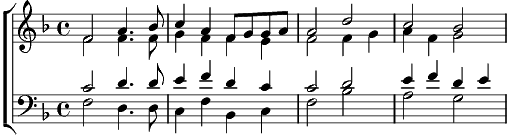

1. Mon cœur se recommande à vous
Tout plein d'ennui et de martyre,
Au moins en dépit des jaloux
Faites qu'adieu vous puisse dire.
2. Ma bouche qui savait sourire
Et conter propos gracieux
Ne fait maintenant que maudire
Ceux qui m'ont banni de vos yeux.
3. Mon cœur se recommande à vous,
Tout plein d'ennui et de martyre,
Au moins en dépit des jaloux
Faites qu'adieu vous puisse dire.